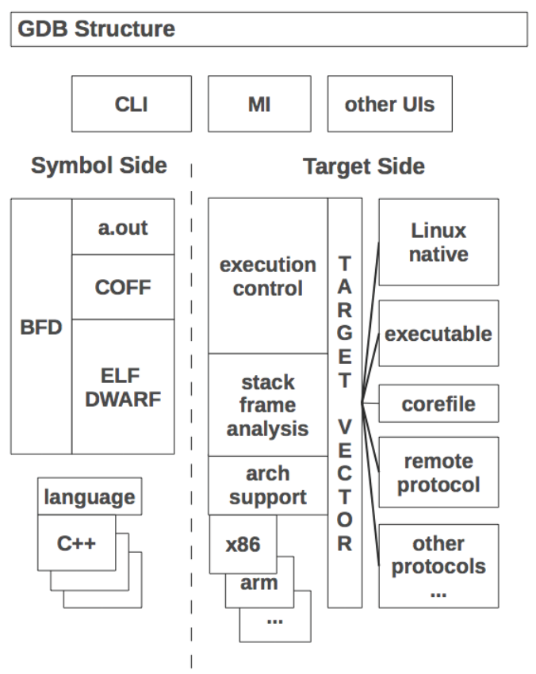

GDB Target Arch
Table of Contents
1. GDB Target Arch
1.1. Overview
gdb 的功能主要分为两大部分:

- symbol side, 主要是使用 DWARF 来解析符号
- target side, 其上层任务 (execution control, stack frame analysis 等) 都依赖于底层 target 的功能来实现. 例如, amd64_linux_nat_target 这个 target 是通过 ptrace 实现的, 而 remote_target 是通过 RSP 实现的.
target 代表可以用来 读写数据 和 控制执行 的底层实体, 例如:
- elf 文件
- core 文件
- gdb record 文件
- native process
- gdbserver
target 抽象是的不同的数据传输方法, 叫 transport 可能更好理解
为了抽象不同的 arch, gdb 定义了 gdbarch 对象, 许多和 arch 相关的任务都是通过 gdbarch 来执行
1.2. target
所有 target 均派生自 target_ops, 其定义的接口主要有:
struct target_ops : public refcounted_object { // ... virtual const target_info &info() const = 0; virtual void attach(const char *, int); virtual void detach(inferior *, int) TARGET_DEFAULT_IGNORE(); virtual void fetch_registers(struct regcache *, int); virtual void store_registers(struct regcache *, int); virtual void files_info() TARGET_DEFAULT_IGNORE(); virtual int insert_breakpoint(struct gdbarch *, struct bp_target_info *); virtual int remove_breakpoint( struct gdbarch *, struct bp_target_info *, enum remove_bp_reason); virtual int can_use_hw_breakpoint(enum bptype, int, int); virtual int ranged_break_num_registers() TARGET_DEFAULT_RETURN(-1); virtual int insert_hw_breakpoint(struct gdbarch *, struct bp_target_info *); virtual int remove_hw_breakpoint(struct gdbarch *, struct bp_target_info *); virtual int remove_watchpoint( CORE_ADDR, int, enum target_hw_bp_type, struct expression *); virtual int insert_watchpoint( CORE_ADDR, int, enum target_hw_bp_type, struct expression *); virtual int can_do_single_step(); virtual void load(const char *, int) TARGET_DEFAULT_NORETURN(tcomplain()); virtual bool can_create_inferior(); virtual void create_inferior( const char *, const std::string &, char **, int); virtual bool follow_fork(bool, bool); virtual int insert_exec_catchpoint(int) TARGET_DEFAULT_RETURN(1); virtual int remove_exec_catchpoint(int) TARGET_DEFAULT_RETURN(1); virtual void follow_exec(struct inferior *, const char *); virtual const char *thread_name(thread_info *) TARGET_DEFAULT_RETURN(NULL); virtual void stop(ptid_t) TARGET_DEFAULT_IGNORE(); virtual void interrupt() TARGET_DEFAULT_IGNORE(); virtual void pass_ctrlc() TARGET_DEFAULT_FUNC(default_target_pass_ctrlc); virtual bool has_all_memory() { return false; } virtual bool has_memory() { return false; } virtual bool has_stack() { return false; } virtual bool has_registers() { return false; } virtual bool has_execution(inferior *inf) { return false; } virtual enum target_xfer_status xfer_partial( enum target_object object, const char *annex, gdb_byte *readbuf, const gdb_byte *writebuf, ULONGEST offset, ULONGEST len, ULONGEST *xfered_len); virtual ULONGEST get_memory_xfer_limit(); virtual std::vector<mem_region> memory_map(); virtual void flash_erase(ULONGEST address, LONGEST length); virtual int search_memory( CORE_ADDR start_addr, ULONGEST search_space_len, const gdb_byte *pattern, ULONGEST pattern_len, CORE_ADDR *found_addrp); virtual bool can_execute_reverse(); virtual bool supports_evaluation_of_breakpoint_conditions(); virtual void dumpcore(const char *filename) TARGET_DEFAULT_IGNORE(); virtual int fileio_open( struct inferior *inf, const char *filename, int flags, int mode, int warn_if_slow, int *target_errno); virtual int fileio_pwrite( int fd, const gdb_byte *write_buf, int len, ULONGEST offset, int *target_errno); virtual int fileio_pread( int fd, gdb_byte *read_buf, int len, ULONGEST offset, int *target_errno); virtual bool info_proc(const char *, enum info_proc_what); virtual enum record_method record_method(ptid_t ptid); virtual void stop_recording(); virtual void save_record(const char *filename); // ... };
可见 target 的接口主要和 数据读写 和 执行控制 有关, 比较重要的 target 有:
inf_ptrace_target
它是所有使用 ptrace 的 target 的基类, 例如 linux_nat_target
remote_target
它实现了 RSP client
通过 static const target_info 关键字可以查到大约有多少种 target, 其它 target
会从这些 target 派生出来, 例如 amd64_linux_nat_target 派生自 inf_child_target:
gdb-10.1/gdb/bfd-target.c:28:static const target_info target_bfd_target_info = {
gdb-10.1/gdb/bsd-uthread.c:36:static const target_info bsd_uthread_target_info = {
gdb-10.1/gdb/corelow.c:59:static const target_info core_target_info = {
gdb-10.1/gdb/exec.c:55:static const target_info exec_target_info = {
gdb-10.1/gdb/inf-child.c:42:static const target_info inf_child_target_info = {
gdb-10.1/gdb/linux-thread-db.c:80:static const target_info thread_db_target_info = {
gdb-10.1/gdb/record-btrace.c:48:static const target_info record_btrace_target_info = {
gdb-10.1/gdb/record-full.c:259:static const target_info record_full_target_info = {
gdb-10.1/gdb/record-full.c:293:static const target_info record_full_core_target_info = {
gdb-10.1/gdb/remote-sim.c:115:static const target_info gdbsim_target_info = {
gdb-10.1/gdb/remote.c:395:static const target_info remote_target_info = {
gdb-10.1/gdb/remote.c:949:static const target_info extended_remote_target_info = {
gdb-10.1/gdb/target.c:3196:static const target_info dummy_target_info = {
gdb-10.1/gdb/tracectf.c:39:static const target_info ctf_target_info = {
gdb-10.1/gdb/tracefile-tfile.c:44:static const target_info tfile_target_info = {
1.3. gdbarch
target 负责传输数据 (例如读取所有寄存器的值), 但数据怎么解释却和 arch 相关, 例如:
- 读到的寄存器数据如何映射到具体的寄存器 (多少个寄存器, 宽度多少, byte order 是什么, sp 在第几个寄存器)?
- 读到的内存数据具体是什么指令?
不同的 target 例如 remote_target, core_target, amd64_linux_nat_target 使用的 gdbarch 可能会有许多相同的项, 例如当它们读取的都是 amd64 的数据时.
struct gdbarch { /* ... */ const struct bfd_arch_info *bfd_arch_info; enum bfd_endian byte_order; enum bfd_endian byte_order_for_code; enum gdb_osabi osabi; const struct target_desc *target_desc; /* target specific vector. */ struct gdbarch_tdep *tdep; gdbarch_dump_tdep_ftype *dump_tdep; int short_bit; int int_bit; int long_bit; int long_long_bit; int bfloat16_bit; int half_bit; int float_bit; int double_bit; int num_regs; int num_pseudo_regs; int sp_regnum; int pc_regnum; int ps_regnum; int fp0_regnum; gdbarch_read_pc_ftype *read_pc; gdbarch_write_pc_ftype *write_pc; gdbarch_register_name_ftype *register_name; gdbarch_register_type_ftype *register_type; gdbarch_print_registers_info_ftype *print_registers_info; gdbarch_print_float_info_ftype *print_float_info; gdbarch_print_vector_info_ftype *print_vector_info; gdbarch_register_to_value_ftype *register_to_value; gdbarch_value_to_register_ftype *value_to_register; gdbarch_return_value_ftype *return_value; gdbarch_memory_insert_breakpoint_ftype *memory_insert_breakpoint; gdbarch_memory_remove_breakpoint_ftype *memory_remove_breakpoint; gdbarch_print_insn_ftype *print_insn; gdbarch_find_memory_regions_ftype *find_memory_regions; gdbarch_gen_return_address_ftype *gen_return_address; gdbarch_info_proc_ftype *info_proc; gdbarch_insn_is_call_ftype *insn_is_call; gdbarch_insn_is_ret_ftype *insn_is_ret; gdbarch_insn_is_jump_ftype *insn_is_jump; gdbarch_print_auxv_entry_ftype *print_auxv_entry; gdbarch_vsyscall_range_ftype *vsyscall_range; gdbarch_gcc_target_options_ftype *gcc_target_options; /* ... */ };
gdbarch 并不像 target 那样针对不同的 target 有不同的派生, 它使用组合 (composition) 的方式:
以 amd64_linux_nat_target 为例:
- 它使用了
amd64-tdep.c中定义的 gdbarch 为基准的 gdbarch - 使用
linux-tdep.c对 gdbarch 做了补充. - 它自己针对 gdbarch 又做了补充
简单的说, gdbarch 抽象了对数据的处理, target 抽象了对数据的读写, 因此很多时候 gdbarch 会封装对 target 的调用
假设一种测试场景, linux host 通过 gdbserver 调试 linux client, 以 info proc
mapping 为例:
- remote_target 对应的 gdbarch 是 amd64_linux_nat_target. 由于所有 linux 的
mapping 都是通过读
/proc/<pid>/maps实现的, 因此 gdbarch 的 info_proc 由linux_tdep.c中 linux_info_proc 实现, 后者会去读 maps, 然后按 linux 的方式解析它 - linux_info_proc 读取 maps 涉及到数据的传输, 通过 target_fileio_read_alloc (而不是直接 open, read) 这个 target_ops 实现的, 后者由 remote_target 实现, 最终会发送
vFile:open到 gdbserver
从接口调用的角度, gdbarch 与 target 的关系大致是这样的:
+--> arch_config
|
gdb +---> gdbarch <--(data)--> target
| ^
| |
+---------(control)----------+
1.4. target stack
gdb 有一个 target stack 的概念:
gdb 加载 elf 后会 push 一个 exec_target 到 target stack, 使得即使不运行也可以执行一些操作, 例如:
~/download/xxx#[15:15:01]@sunway-t14> gdb test.elf (gdb) b main Breakpoint 1 at 0x115b: file test.c, line 11. (gdb) x 0x115b 0x115b <main>: 0xfa1e0ff3
开始 run 后, 会再 push 一个 amd64_linux_nat_target, 这时 target 相关的操作会由栈顶的 amd64_linux_nat_target 来处理.
(gdb) r
Starting program: /home/sunway/download/xxx/test.elf
Breakpoint 1, main (argc=0, argv=0x7fffffffc330) at test.c:11
11 int main(int argc, char* argv[]) { return foo(argc); }
(gdb) x 0x115b
0x115b: Cannot access memory at address 0x115b
1.5. backtrace
1.5.1. systemtap
使用 systemtap 可以方便的打印 backtrace, 例如这个脚本:
backtrace.sh:
#!/bin/bash while getopts 'f:c:' opt; do case "$opt" in f) function="$OPTARG" ;; c) cmd="$OPTARG" ;; ?|h) echo "Usage: $(basename $0) [-f function] [-c cmd] " exit 1 ;; esac done if [[ "${function}z" == "z" || "${cmd}z" == "z" ]]; then echo "Usage: $(basename $0) [-f function] [-c cmd] " exit 1 fi sudo stap -e "probe process.function(\"$function\") {print_ubacktrace(); }" -c "$cmd"
ubuntu 自带的 systemtap 有问题, 可以从 https://sourceware.org/git/systemtap.git 下载后自己编译.
使用 systemtap 打印 backtrace 需要被调试的程序有符号信息. 另外 systemtap 的
process.function 可以使用 pattern, 例如 backtrace.sh -f "target_*" -c "xxx"
1.5.2. info register
使用 remote target 执行 info reg 时的 backtrace
$> cat /tmp/test.cmd target remote localhost:12345 info reg $> backtrace.sh -f "fetch_registers" -c "/usr/local/bin/gdb ./test.elf -x /tmp/test.cmd --batch" 0x56025fbc8970 : _ZN13remote_target15fetch_registersEP8regcachei+0x0/0x210 [/usr/local/bin/gdb] 0x56025fc3a381 : _Z22target_fetch_registersP8regcachei+0x31/0x70 [/usr/local/bin/gdb] 0x56025fba836a : _ZN8regcache10raw_updateEi+0x3a/0x50 [/usr/local/bin/gdb] 0x56025fba840e : _ZN17readable_regcache8raw_readEiPh+0x1e/0xb0 [/usr/local/bin/gdb] 0x56025fba873d : _ZN17readable_regcache17cooked_read_valueEi+0x9d/0x150 [/usr/local/bin/gdb] 0x56025fbd9b66 : _ZL28sentinel_frame_prev_registerP10frame_infoPPvi+0x16/0x40 [/usr/local/bin/gdb] 0x56025fa858e7 : _Z27frame_unwind_register_valueP10frame_infoi+0x47/0x2d0 [/usr/local/bin/gdb] 0x56025fc8d8e4 : _Z16value_fetch_lazyP5value+0x1c4/0x6d0 [/usr/local/bin/gdb] 0x56025fa813c6 : _Z17value_of_registeriP10frame_info+0x66/0x80 [/usr/local/bin/gdb] 0x56025fac6578 : _Z28default_print_registers_infoP7gdbarchP7ui_fileP10frame_infoii+0x78/0xe0 [/usr/local/bin/gdb] 0x56025f9c81aa : _Z8cmd_funcP16cmd_list_elementPKci+0x3a/0x70 [/usr/local/bin/gdb] 0x56025fc45828 : _Z15execute_commandPKci+0x7f8/0xa20 [/usr/local/bin/gdb] 0x56025fa73175 : _Z15command_handlerPKc+0x85/0xd0 [/usr/local/bin/gdb] 0x56025fc4684f : _Z17read_command_fileP8_IO_FILE+0x3f/0x60 [/usr/local/bin/gdb] 0x56025f9d0c19 : _Z16script_from_fileP8_IO_FILEPKc+0x119/0x1d0 [/usr/local/bin/gdb] 0x56025f9c3bbb : _ZL25source_script_with_searchPKcii+0xfb/0x1f0 [/usr/local/bin/gdb] 0x56025fb16ee0 : _ZL20catch_command_errorsPFvPKciES0_i+0x20/0x50 [/usr/local/bin/gdb] 0x56025fb185c9 : _ZL15captured_main_1P18captured_main_args+0xd59/0x1640 [/usr/local/bin/gdb] 0x56025fb18ebf : _Z8gdb_mainP18captured_main_args+0xf/0x40 [/usr/local/bin/gdb] 0x56025f933a30 : main+0x40/0x60 [/usr/local/bin/gdb]
c++filt 处理后为:
remote_target::fetch_registers(regcache*, int) target_fetch_registers(regcache*, int) regcache::raw_update(int) readable_regcache::raw_read(int, unsigned char*) readable_regcache::cooked_read_value(int) sentinel_frame_prev_register(frame_info*, void**, int) frame_unwind_register_value(frame_info*, int) value_fetch_lazy(value*) value_of_register(int, frame_info*) default_print_registers_info(gdbarch*, ui_file*, frame_info*, int, int) cmd_func(cmd_list_element*, char const*, int) execute_command(char const*, int) command_handler(char const*) read_command_file(_IO_FILE*) script_from_file(_IO_FILE*, char const*) source_script_with_search(char const*, int, int) catch_command_errors(void (*)(char const*, int), char const*, int) captured_main_1(captured_main_args*) gdb_main(captured_main_args*)
cmd相关的代码在infcmd.c, 它调用了gdbarch_print_registers_info- i386 的 gdbarch 使用默认的
default_print_registers_info, - default_print_registers_info 使用了 regcache, 然后调用到 remote_target::fetch_registers
- remote_target 发送
gRSP packet
gdbarch 中的 default_xxx 使得 gdbarch 有点像 基于组合 (composition) 的抽象类
1.6. Porting new arch
1.6.1. native debug
gdb 运行在 host arch, 被调试程序运行在 target arch, 大多数情况下 host arch 与 target arch 相同, 称为 native debug
有时 host arch 与 target arch 会不同, 例如 x86 上的 gdb 可以查看 riscv 的 elf 或 coredump 的内容, 或者 x86 上的 gdb 通过 gdbserver 可以调试 riscv 的进程
1.6.1.1. nat
gdb 主要是以 native debug 为主, xxx-nat.c 定义了不同的 native target, 例如
amd64-linux-nat.c 定义了 amd64 linux 的 native target.
native target 在 xxx-nat.c 中定义, 其它的 target 例如 core_target 定义在
corelow.c, remote_target 定义在 remote.c
1.6.1.2. tdep
xxx-tdep.c 主要用来定义 gdbarch, 它不是 native target 专用的, 因为其它 target
也需要这部分信息.
1.6.2. target & gdbarch initialization
以 amd64_linux_nat_target 为例, 说明 target 与 gdbarch 的初始化过程.
1.6.2.1. init.c
编译 gdb 时, 如果 configure 时指定了 host 和 target 相同, configure
(gdb/gdb/configure.nat) 会把对应的 o 文件 (例如 amd64-linux-nat.o,
x86-linux-nat.o 等) 带入到 Makefile 中参与编译 , 同时 Makefile 会根据 nat 对应的
o 文件找到源文件, 扫描其中的 _initialize 函数
根据 configure 指定的 target, configure (gdb/gdb/configure.tgt) 会把 target 对应的 o 文件 (例如 i386-tdep.o, amd64_tdep.o, amd64-linux-tdep.o 等) 引入 Makefile,
同时扫描其 _initialize 函数
最终 configure 会在 init.c 中生成如下的内容:
void initialize_all_files(void) { _initialize_i386_tdep(); _initialize_amd64_tdep(); /* ... */ _initialize_linux_tdep(); /* ... */ _initialize_amd64_linux_nat (); /* ... */ }
其中的 _initialize_xxx 都来自 configure 时扫描的结果, 确定了 gdb 支持的唯一的
native target 和多个 target arch
1.6.2.2. init native target
void _initialize_amd64_linux_nat() { linux_target = &the_amd64_linux_nat_target; add_inf_child_target(linux_target); }
add_inf_child_target 导致 gdb 执行 r 命令时, 会使用 amd64_linux_nat_target
1.6.2.3. init tdep
1.6.2.3.1. register gdbarch
void _initialize_amd64_linux_tdep() { gdbarch_register_osabi( bfd_arch_i386, bfd_mach_x86_64, GDB_OSABI_LINUX, amd64_linux_init_abi); gdbarch_register_osabi( bfd_arch_i386, bfd_mach_x64_32, GDB_OSABI_LINUX, amd64_x32_linux_init_abi); }
_initialize_amd64_linux_tdep 只是注册了一个回调函数 (amd64_linux_init_abi), 后者的调用时通过 target 完成的, 因为 target 知道它对应哪个 gdbarch, 例如 core_target 根据 corefile 的 arch, remote_target 根据 server 端的信息
backtrace:
amd64_linux_init_abi(gdbarch_info, gdbarch*) i386_gdbarch_init(gdbarch_info, gdbarch_list*) gdbarch_find_by_info(gdbarch_info) set_gdbarch_from_file(bfd*) exec_file_attach(char const*, int) catch_command_errors(void (*)(char const*, int), char const*, int) captured_main_1(captured_main_args*) gdb_main(captured_main_args*) main
其中 i386_gdbarch_init 是 i386-tdep.c 中定义的针对 i386 的 init 函数, 通过
register_gdbarch_init (bfd_arch_i386, i386_gdbarch_init) 注册. init 时先找到这人回调, 然后再通过它调用到针对具体 mach (x86_64) 和 osabi (linux) 的
amd64_linux_init_abi
1.6.2.3.2. target description
gdbarch_find_by_info 使用的 info 来自 target 的 target_description
allocate_target_description() amd64_create_target_description(unsigned long, bool, bool, bool) amd64_linux_read_description(unsigned long, bool) x86_linux_nat_target::read_description() target_find_description() post_create_inferior(target_ops*, int) run_command_1(char const*, int, run_how) cmd_func(cmd_list_element*, char const*, int) execute_command(char const*, int) command_handler(char const*) read_command_file(_IO_FILE*) script_from_file(_IO_FILE*, char const*) source_script_with_search(char const*, int, int) catch_command_errors(void (*)(char const*, int), char const*, int) captured_main_1(captured_main_args*) gdb_main(captured_main_args*) main
其中 amd64_create_target_description 定义在 amd64_linux_nat_target 中
target_desc *amd64_create_target_description( uint64_t xcr0, bool is_x32, bool is_linux, bool segments) { target_desc *tdesc = allocate_target_description(); /* gdbarch init 需要的信息: i386, x86_64, linux 从 target description 都可以 * 得到 */ set_tdesc_architecture(tdesc, is_x32 ? "i386:x64-32" : "i386:x86-64"); if (is_linux) set_tdesc_osabi(tdesc, "GNU/Linux"); long regnum = 0; if (is_x32) regnum = create_feature_i386_x32_core(tdesc, regnum); else regnum = create_feature_i386_64bit_core(tdesc, regnum); /* ... */ return tdesc; }
1.6.3. porting
porting 一个新的 arch 大约需要:
binutils
gdb 的 disass 依赖 opcodes, 解析符号依赖 bfd
os
native debug 依赖 ptrace 这类系统调用
xxx-tdep
需要定义 gdbarch, 实现其中定义的回调函数.
例如 riscv-tdep.c, riscv-linux-tdep.c
xxx-nat
需要实现 target_ops
例如 riscv-linux-nat.c
配置 configure
修改 configure (configure.nat, configure.tgt), 以完成初始化
Backlinks
GDB (GDB > GDB Target Arch): GDB Target Arch